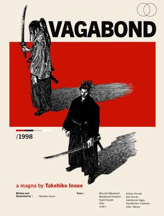

vagabond
Vagabond narra la historia del legendario espadachín Musashi Miyamoto, la figura histórica más importante del Japón en lo que se refiere al dominio de las técnicas de espada y esta como filosofía de vida. Al comienzo de la historia vemos al protagonista como un violento e iracundo joven llamado Takezo, el cual sobrevive (aun estando del lado perdedor) a una de las batallas más sangrientas de la historia: Sekigahara. Luego de que su vida da un giro gracias a la intervención de un monje llamado Takuan, el joven Takezo cambia su nombre a Musashi y se embarca en una búsqueda de autosuperación personal que lo llevará a enfrentarse con los más grandes expertos de las artes marciales del país, incluido su futuro antagonista. Así poco a poco, con sangre y sudor, va construyendo su propia leyenda, la del verdadero «vagabundo» más poderoso de todo Japón.